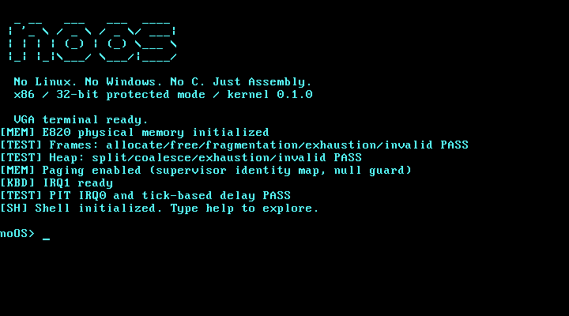

AN OPERATING SYSTEM FROM ZERO
Just
Assembly.
No Linux. No Windows. No C.
A real x86 operating system built from its first boot sector to an interactive shell. VGA, keyboard interrupts, memory allocators, paging, and hardware ticks—all in NASM.

The runtime capture is unavailable.
Boot noOS with the commands below.

A real shell. Live memory, CPU, and uptime data.
NASM is the runtime language. QEMU is the test machine.
01 / THE BOOT PATH
From reset.
To your kernel.
The BIOS hands over control. noOS takes it from there.
- 01
Boot sector
The BIOS loads the 512-byte first stage at
boot/stage1.asm0x7C00. It preserves the boot drive and loads stage two. - 02
Second stage
Loads the kernel from disk, preserves the BIOS E820 memory map, checks A20, and installs a Global Descriptor Table.
boot/stage2.asm - 03
Protected mode
Sets the protected mode bit, performs a far jump, and establishes the kernel’s 32-bit environment.
boot/gdt.asm - 04
Kernel entry
Execution reaches
kernel/entry.asm0x10000. The kernel initializes its terminal, interrupts, memory, and timer, then starts the shell.
02 / BUILT IN THE OPEN
Proof before
percentage.
Eight milestones. Forty equal gates. Progress increases when an implementation is verified.
Loading verified gates…
Read the engineering roadmapLoading the roadmap…
03 / RUN IT YOURSELF
Four commands.
A fresh boot.
Install NASM, QEMU, GNU Make, and Python 3 on your host. Then build and boot the real disk image.
Build, test, and debuggit clone https://github.com/OthmaneBlial/noOS.git
cd noOS
make
make runmake test checks the boot path in QEMU. make debug pauses it for GDB.This is an experimental operating system for QEMU’s BIOS pc machine. Physical memory management currently covers the first 128 MiB. Physical hardware and UEFI are unvalidated; filesystem, process, and user mode work has its own roadmap gates.